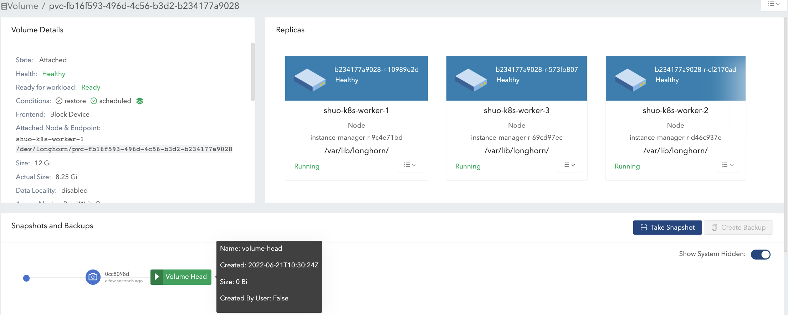

|
Este documento ha sido traducido utilizando tecnología de traducción automática. Si bien nos esforzamos por proporcionar traducciones precisas, no ofrecemos garantías sobre la integridad, precisión o confiabilidad del contenido traducido. En caso de discrepancia, la versión original en inglés prevalecerá y constituirá el texto autorizado. |
Tamaño del volumen
Volumen Size:

Este valor, que especificaste durante la creación del volumen, representa la cantidad de espacio disponible para el volumen cuando está en uso.
Las siguientes son otras formas de entender este concepto:
-
El volumen en sí es solo un objeto CRD de Kubernetes y los datos del volumen se almacenan en réplicas. Este valor representa el tamaño nominal de cada réplica.
-
SUSE Storage réplicas utilizan archivos dispersos para almacenar datos. Este valor representa el tamaño máximo al que un archivo disperso puede expandirse.
Las réplicas se programan en nodos con suficiente espacio asignable para cubrir este tamaño nominal durante la creación del volumen. Para más información, consulta Uso de espacio en nodo.
|
El tamaño máximo del volumen se basa en el sistema de archivos del disco (por ejemplo, 16383 GiB para |
Volumen Actual Size

Este valor representa la cantidad de espacio utilizado por cada réplica (incluyendo la cabeza de volumen y las instantáneas) en el nodo.
Debido a que todos los datos históricos (almacenados en las instantáneas) y los datos activos se incluyen en el cálculo, este valor puede exceder el tamaño nominal definido por el usuario.
La interfaz de usuario SUSE Storage muestra este valor solo cuando el volumen está en funcionamiento.
Ejemplo
En el ejemplo, explicaremos cómo el volumen size y actual size cambian después de un montón de operaciones relacionadas con IO e instantáneas.
La ilustración presenta la organización de archivos de una réplica. La cabeza de volumen y las instantáneas son, en realidad, archivos dispersos, que mencionamos anteriormente.

-
Crea un volumen de 12 Gi con una sola réplica, luego adjúntalo y móntalo en un nodo. Consulta la Figura 1 de la ilustración.
-
Para el volumen vacío, el nominal
sizees 12 Gi y elactual sizees casi 0. -
Hay algo de información meta en el volumen, por lo tanto, el
actual sizees 260 Mi y no es exactamente 0.
-

-
Escribe 4 Gi de datos (data#0) en el punto de montaje del volumen. El
actual sizese incrementa en 4 Gi debido a los bloques asignados en la réplica para los 4 Gi de datos. Mientras tanto, el comandodfen el sistema de archivos también muestra el espacio utilizado de 4 Gi. Consulta la Figura 2 de la ilustración.

-
Elimina los 4 Gi de datos. Luego, el comando
dfmuestra que el espacio utilizado del sistema de archivos es casi 0, pero elactual sizepermanece sin cambios.Los usuarios pueden ver por defecto que el volumen
actual sizeno se reduce después de eliminar los 4 Gi de datos. SUSE Storage es un sistema de almacenamiento a nivel de bloque. Por lo tanto, la eliminación en el sistema de archivos solo marca los bloques que pertenecen al archivo eliminado como no utilizados. Actualmente, SUSE Storage no aplicará operaciones TRIM/UNMAP de forma automática/periódica. Si deseas realizar un trim del sistema de archivos, consulta este documento para más detalles.
-
Luego, reescribe los 4 Gi de datos (data#1), y el comando
dfen el sistema de archivos muestra nuevamente 4 Gi de espacio utilizado. Sin embargo, elactual sizese incrementa en 4 Gi y se convierte en 8.25 Gi. Consulta la Figura 3(a) de la ilustración.Después de la eliminación, el sistema de archivos puede o no reutilizar los bloques recientemente liberados de los archivos eliminados recientemente, según el diseño del sistema de archivos, y consulta Estrategias de asignación de bloques de varios sistemas de archivos. Si el tamaño nominal del volumen
sizees 12 Gi, elactual sizeal final oscilaría entre 4 Gi y 8 Gi, ya que el sistema de archivos puede o no reutilizar los bloques liberados. Por otro lado, si el tamaño nominal del volumensizees 6 Gi, elactual sizeal final oscilaría entre 4 Gi y 6 Gi, porque el sistema de archivos tiene que reutilizar los bloques liberados en la segunda ronda de escritura. Consulta la Figura 3(b) de la ilustración.Por lo tanto, asignar un tamaño nominal apropiado
sizepara un volumen que maneja tareas de escritura intensivas según el patrón de E/S haría que el uso del espacio en disco fuera más eficiente.

-
Toma una instantánea (instantánea#1). Consulta la Figura 4 de la ilustración.
-
Ahora los datos#1 están almacenados en la instantánea#1.
-
El nuevo tamaño de la cabeza de volumen es casi 0.
-
Con la cabeza de volumen y la instantánea incluidas, el
actual sizepermanece en 8.25 Gi.
-

-
Elimina los datos#1 del punto de montaje.
-
La información de eliminación del nivel del sistema de archivos de los datos#1 está almacenada en el archivo de la cabeza de volumen actual. Para la instantánea#1, los datos#1 todavía se retienen como datos históricos.
-
El
actual sizesigue siendo 8.25 Gi.
-
-
Escribe 8 Gi de datos (datos#2) en el montaje de volumen, luego toma una instantánea más (instantánea#2). Consulta la Figura 5 de la ilustración.
-
Ahora el
actual sizees 16.2 Gi, que es mayor que el tamaño nominalsizedel volumen. -
Desde la perspectiva de un sistema de archivos, la parte superpuesta entre las dos instantáneas se considera como los bloques que deben ser reutilizados o sobrescritos. Pero en términos de SUSE Storage, estos bloques son en realidad nuevos y se mantienen en otra instantánea/cabeza de volumen. Consulta las 2 instantáneas en la Figura 6.
La cabeza de volumen contiene únicamente los datos más recientes del volumen, mientras que cada instantánea puede almacenar tanto datos históricos como datos activos, consumiendo, como máximo, el espacio especificado. Por lo tanto, el volumen
actual size, que es la suma del tamaño de la cabeza de volumen y todas las instantáneas, puede ser más grande que el tamaño especificado por los usuarios.Incluso si los usuarios no toman instantáneas para los volúmenes, hay operaciones como la reconstrucción, expansión o respaldo que llevarían a la creación de instantáneas (ocultas) del sistema. Como resultado, que el volumen
actual sizesea más grande que el tamaño es inevitable en algunos casos de uso. -

-
Elimina la instantánea#1 y espera a que se complete la purga de la instantánea. Consulta la Figura 7 de la ilustración.
-
Aquí SUSE Storage realmente fusiona la instantánea#1 con la instantánea#2.
-
Para la parte superpuesta durante la fusión, se retendrán los datos más nuevos (datos#2) en los bloques. Luego se eliminan algunos datos históricos y el volumen se reduce (de 16.2 Gi a 11.4 Gi en el ejemplo).
-

-
Elimina todos los datos existentes (datos#2) y escribe 11.5 Gi de datos (datos#3) en el montaje del volumen. Consulta la Figura 8 de la ilustración.
-
Esto hace que el tamaño real del encabezado del volumen sea de 11.5 Gi y el tamaño total real del volumen sea de 22.9 Gi.
-

-
Intenta eliminar la única instantánea (instantánea#2) del volumen. Consulta la Figura 9 de la ilustración.
-
La instantánea situada justo detrás de la cabeza de volumen no se puede limpiar. Si los usuarios intentan eliminar este tipo de instantánea, SUSE Storage marcará la instantánea como "Eliminando", la ocultará y luego intentará liberar la parte superpuesta entre la cabeza de volumen y la instantánea para el archivo de la instantánea. La última operación se llama poda de instantáneas en SUSE Storage y está disponible desde la versión v1.3.0.
-
Dado que en el ejemplo tanto la instantánea como la cabeza de volumen utilizan la mayor parte del espacio nominal, la parte superpuesta casi equivale al tamaño real de la instantánea. Después de la poda, el tamaño real de la instantánea se reduce a 259 Mi y el volumen se reduce de 22.9 Gi a 11.8 Gi.
-

Aquí resumimos las cosas importantes relacionadas con el uso del espacio en disco que tenemos en el ejemplo:
-
Los bloques no utilizados no se liberan.
SUSE Storage no emitirá operaciones TRIM/UNMAP automáticamente. Por lo tanto, eliminar archivos de sistemas de archivos no llevará a una disminución/reducción del tamaño real del volumen. Es posible que necesites consultar el documento y gestionarlo por ti mismo si es necesario.
-
Los bloques asignados pero no utilizados no se reutilizan.
Eliminar y luego escribir nuevos archivos haría que el tamaño real siga aumentando. Dado que el sistema de archivos puede no reutilizar los bloques recientemente liberados de archivos eliminados recientemente. Por lo tanto, asignar un tamaño nominal apropiado para un volumen que maneja tareas de escritura intensivas según el patrón de E/S haría que el uso del espacio en disco fuera más eficiente.
-
Al eliminar instantáneas, la parte superpuesta de los bloques utilizados podría ser eliminada, independientemente de si los bloques son bloques recientemente liberados por el sistema de archivos o aún contienen datos históricos.
Sugerencias de configuración de espacio para volúmenes
-
Reserve suficiente espacio libre en los discos como búferes en caso de que el tamaño real de los volúmenes existentes siga creciendo.
-
Una estimación general para el consumo máximo de espacio de un volumen es
(N + 1) x head/snapshot average actual size
-
donde
Nes el número total de instantáneas que contiene el volumen (incluyendo la cabeza del volumen), y el extra1es para el espacio temporal que puede ser requerido por la eliminación de instantáneas. -
El tamaño real promedio de las instantáneas varía y depende de los casos de uso. Si se crean instantáneas periódicamente para un volumen (por ejemplo, confiando en trabajos recurrentes de instantáneas), el valor promedio sería el tamaño promedio de los datos modificados para el volumen en el intervalo de creación de instantáneas. Si hay tareas de escritura intensivas para los volúmenes, el tamaño real promedio de la cabeza/instantánea sería el tamaño nominal del volumen. En este caso, es mejor establecer
Storage Over Provisioning Percentagepara que sea menor que el 100% para evitar el agotamiento del espacio en disco. -
Algunos casos extendidos:
-
Hay un trabajo recurrente de instantáneas con un número de retención de
N. Entonces, la fórmula se puede extender a:(M + N + 1 + 1 + 1 + 1) x head/snapshot average actual size
-
La explicación de la fórmula:
-
Mson las instantáneas creadas manualmente por los usuarios. Los trabajos recurrentes no son responsables de eliminar este tipo de instantánea. Solo pueden ser eliminadas por los usuarios. -
Nes el número de retención del trabajo recurrente de instantáneas. -
La 1.ª
1significa la cabeza de volumen. -
La 2.ª
1significa la instantánea extra creada por el trabajo recurrente. Dado que el trabajo recurrente siempre crea una nueva instantánea y luego elimina la instantánea más antigua cuando las instantáneas actuales creadas por él superan el número de retención. Antes de que comience la eliminación, hay una instantánea extra que puede ocupar espacio adicional en disco. -
La 3.ª
1es la instantánea del sistema. Si se activa la reconstrucción o se emite la expansión, SUSE Storage creará una instantánea del sistema antes de comenzar las operaciones. Y esta instantánea del sistema puede no poder limpiarse inmediatamente. -
La 4.ª
1es para el espacio temporal que puede ser requerido por la eliminación/purga de instantáneas.
-
-
-
Los usuarios no quieren instantáneas en absoluto. Ni la instantánea (creada manualmente) ni el trabajo recurrente se lanzarán. Supongamos que configuración _Limpiar automáticamente la instantánea generada por el sistema está habilitada, entonces la fórmula se convertiría en:
(1 + 1 + 1) x head/snapshot average actual size
-
El peor caso que lleva a tanto uso de espacio:
-
En algún momento se activa la 1.ª reconstrucción/expansión, lo que lleva a la creación de la 1.ª instantánea del sistema.
-
Las purgas antes y después de la 1ª reconstrucción no hacen nada.
-
-
Hay datos escritos en la nueva cabeza de volumen, y de alguna manera se activa la 2.ª reconstrucción/expansión.
-
La purga de instantáneas antes de la 2.ª reconstrucción puede llevar a la reducción de la 1.ª instantánea del sistema.
-
Luego se crea la 2.ª instantánea del sistema y se inicia la reconstrucción.
-
Después de que se complete la reconstrucción, la purga de instantáneas subsiguiente llevaría a la fusión de las 2 instantáneas del sistema. Esta fusión requiere espacio temporal.
-
-
Durante la purga de instantáneas posterior a la 2ª reconstrucción, se escriben más datos en la nueva cabeza de volumen.
-
-
La explicación de la fórmula:
-
La 1.ª
1significa la cabeza de volumen. -
La 2.ª
1es la segunda instantánea del sistema mencionada en el peor de los casos. -
La 3.ª
1es para el espacio temporal que puede ser requerido por la purga/coalescencia de 2 instantáneas del sistema.
-
-
-
-
-
-
No se deben retener demasiadas instantáneas para los volúmenes.
-
Limpiar las instantáneas ayudará a recuperar espacio en disco. Hay dos maneras de limpiar las instantáneas:
-
Las instantáneas deben eliminarse manualmente a través de la interfaz de usuario de SUSE Storage.
-
Se debe establecer un trabajo recurrente de instantáneas con retención 1; entonces las instantáneas se limpiarán automáticamente.
Además, debe tenerse en cuenta que el espacio extra, hasta el nominal del volumen
size, es necesario durante la limpieza y fusión de instantáneas. -
-
Se debe establecer un valor nominal para el volumen (
size) apropiado según las cargas de trabajo.
Solución de problemas
La carga de trabajo está generando un error no space left on device.
Para abordar el error “no space left on device”, es necesario entender que la diferencia entre un volumen lleno y los discos del nodo llenos es crucial para una gestión adecuada del almacenamiento en SUSE Storage.
Volumen lleno
Un volumen está lleno cuando su sistema de archivos montado ha alcanzado su límite de capacidad. * Las escrituras de datos fallan con errores “no space left on device”. * El disco del host para la réplica del volumen puede seguir teniendo espacio disponible para otros volúmenes.
-
Características:
-
El comando
dfmuestra un uso del 100% para el sistema de archivos montado. -
Las aplicaciones no pueden escribir nuevos datos en el punto de montaje del volumen.
-
Ejemplo:
$ df -h /mnt/longhorn-volume-example-dir
Filesystem Size Used Avail Use% Mounted on
/dev/longhorn-volume-example 12G 12G 0 100% /mnt/longhorn-volume-example-dirDisco del nodo lleno
Los discos del nodo pueden no tener suficiente espacio para acomodar las operaciones del volumen porque los volúmenes están provisionados de forma delgada, y los tamaños de las réplicas continúan creciendo. * Las escrituras de datos fallan con errores “no space left on device”, incluso si el sistema de archivos del volumen no está lleno. * Las operaciones del volumen como la creación, expansión y gestión de instantáneas pueden estar limitadas. * Las réplicas de volumen recién creadas no pueden ser programadas en los discos llenos.
-
Características:
-
Las aplicaciones no pueden escribir nuevos datos en el punto de montaje del volumen aunque el volumen no esté lleno.
-
Las SUSE Storage operaciones en estos discos, como la creación de réplicas, la reconstrucción o las operaciones de instantáneas, pueden fallar.
-
Los volúmenes con réplicas en estos discos de nodo se ven afectados.
-
Protección de la integridad de los datos para escenarios de discos sin espacio.
Cuando múltiples réplicas encuentran simultáneamente errores “no space left on device”, SUSE Storage implementa la protección de la integridad de los datos. Si todas las réplicas escribibles están en discos que se han quedado sin espacio, el sistema preserva el número máximo de réplicas que han escrito la misma cantidad de datos (el conteo de bytes escritos más alto). Esto asegura la consistencia de los datos mediante:
-
Manteniendo el número máximo de réplicas que han escrito la misma cantidad de datos. Esto evita operaciones masivas de reconstrucción de réplicas, permite una reconstrucción eficiente cuando los discos de nodo se recuperan de problemas de falta de espacio y asegura que los usuarios puedan seguir leyendo datos de manera consistente.
-
Marcando otras réplicas como
ERRpara prevenir la corrupción de datos. Esto asegura que los usuarios puedan leer datos de manera consistente de las réplicas retenidas, y las réplicas marcadas comoERRserán reconstruidas a partir de las réplicas retenidas para mantener la integridad de los datos cuando los discos de nodo se recuperen de problemas de falta de espacio. -
Manteniendo la accesibilidad del volumen incluso cuando todos los discos subyacentes están llenos.
Por ejemplo, si las réplicas A, B y C encuentran errores de espacio después de escribir 1MB, 2MB y 2MB respectivamente, las réplicas B y C permanecerán activas mientras que la réplica A se marcará como ERR.
Solución
Al encontrar el error no space left on device, primero verifica el uso del sistema de archivos del volumen, luego verifica el disco que alberga la réplica del volumen.
-
Verifica el uso del sistema de archivos del volumen: Si el uso del sistema de archivos del volumen es del 100% (usando el siguiente comando):
df -h /mnt/your-volumeExpande el volumen o elimina archivos innecesarios del sistema de archivos.
-
Verifica el uso del disco del nodo SUSE Storage: Verifica el uso del disco en la interfaz de usuario SUSE Storage bajo Nodo > Disco del Nodo o usa la línea de comandos:
# Check through SUSE Storage UI: Node > Node Disk # Or check the data path mount point df -h /var/lib/longhorn # default data pathSi el uso del disco es del 100%, sigue estos pasos para recuperar las cargas de trabajo:
-
Reduce la carga de trabajo.
-
Amplía el tamaño del disco o elimina archivos innecesarios como directorios de réplicas huérfanas y imágenes de respaldo utilizadas en el disco.
-
Aumenta la carga de trabajo.
-